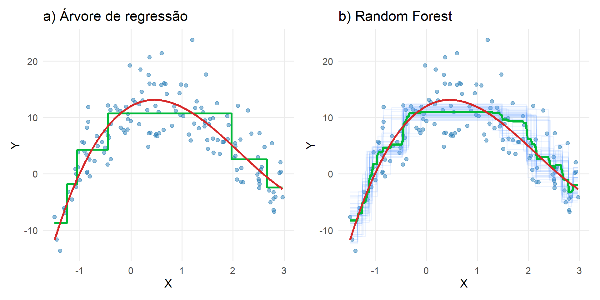

Parte I : Aprendizado Supervisionado
Bagging e Random Forest
De uma árvore a muitas
O problema
Uma árvore profunda pode ter:
\[ \text{baixo viés}+\text{alta variância} \]
Como reduzir a variância sem voltar a um modelo rígido?
\[ \boxed{\text{ajustar várias árvores e calcular uma média}} \]
Por que combinar árvores?
Considere dois estimadores \(g_1(\mathbf{x})\) e \(g_2(\mathbf{x})\).
Definimos o estimador combinado:
\[ g(\mathbf{x}) = \frac{g_1(\mathbf{x}) + g_2(\mathbf{x})}{2} \]
O erro esperado é:
\[ \mathbb{E}\big[(\boldsymbol{y} - g(\mathbf{x}))^2 \mid \mathbf{x}\big] = \mathbb{V}(\boldsymbol{y} \mid \mathbf{x}) + \frac{1}{4}\mathbb{V}(g_1(\mathbf{x}) + g_2(\mathbf{x})) + \text{bias}^2 \]
Se \(g_1(\mathbf{x})\) e \(g_2(\mathbf{x})\) são:
- não viesados
- com mesma variância
- não correlacionados
então:
\[ \mathbb{E}\big[(\boldsymbol{y} - g(\mathbf{x}))^2 \mid \mathbf{x}\big] = \mathbb{V}(\boldsymbol{y} \mid \mathbf{x}) + \frac{1}{2}\mathbb{V}(g_i(\mathbf{x})) \]
Conclusão
\[ \mathbb{E}\big[(\boldsymbol{y} - g(\mathbf{x}))^2 \mid \mathbf{x}x\big] \le \mathbb{E}\big[(\boldsymbol{y} - g_i(\mathbf{x}))^2 \mid \mathbf{x}\big] \]
Bootstrap
A partir de
\[ \mathcal D_n=\{(\mathbf x_i,y_i)\}_{i=1}^{n}, \]
criamos \(\mathcal D_n^{*(b)}\) sorteando \(n\) observações com reposição.
Repetimos para:
\[b=1,\ldots,B\]
Bagging
Ajustamos uma árvore \(\widehat g_b\) em cada amostra bootstrap.
A predição é:
\[ \boxed{ \widehat g_{bag}(\mathbf x)= \frac1B\sum_{b=1}^{B}\widehat g_b(\mathbf x) } \]
Bagging = Bootstrap Aggregating.
A intuição estatística
Cada árvore é instável, mas seus erros não são idênticos.
A média tende a cancelar parte da variabilidade específica de cada árvore.
\[ \boxed{\text{média de modelos instáveis}\Rightarrow\text{modelo mais estável}} \]

Propriedade fundamental
Se os estimadores são aproximadamente não viesados:
- o viés permanece semelhante
- a variância é reduzida
Assim,
\[ \mathbb{E}[(\boldsymbol{y} - g(\mathbf{x}))^2 \mid \mathbf{x}] \le \mathbb{E}[(\boldsymbol{y} - g_b(\mathbf{x}))^2 \mid \mathbf{x}] \]
Importância de Variáveis em Árvores
Bagging permite medir a relevância de cada variável:
- baseada na redução do erro (RSS)
- cada divisão reduz a variabilidade
A qualidade de uma divisão é medida pela redução do erro quadrático (RSS).
Considere um nó pai dividido em dois nós:
- esquerda (\(\mathcal{R}_{esq}\))
- direita (\(\mathcal{R}_{dir}\))
Redução do erro
A redução no RSS é dada por:
\[ \text{RSS}_{pai} - \text{RSS}_{esq} - \text{RSS}_{dir} \]
Ou, explicitamente:
\[ \sum_{i \in \mathcal{R}_{pai}} (y_i - \bar{y}_{pai})^2 - \sum_{i \in \mathcal{R}_{esq}} (y_i - \bar{y}_{esq})^2 - \sum_{i \in \mathcal{R}_{dir}} (y_i - \bar{y}_{dir})^2 \]
Interpretação
- quanto maior a redução → melhor a divisão
- boas variáveis geram partições mais homogêneas
Variáveis importantes são aquelas que mais reduzem a variabilidade da resposta.
Caso ideal: independência
Se:
\[ Var[\widehat g_b(\mathbf x)]=\sigma_g^2 \]
e as árvores fossem independentes:
\[ Var\left[ \frac1B\sum_{b=1}^{B}\widehat g_b(\mathbf x) \right] = \frac{\sigma_g^2}{B} \]
Mas árvores não são independentes
As árvores nascem do mesmo conjunto original e frequentemente selecionam variáveis semelhantes.
Suponha:
\[ Corr(\widehat g_b,\widehat g_{b'})=\rho \]
A correlação limita a redução de variância.
Variância da média correlacionada
Sob variância comum \(\sigma_g^2\) e correlação comum \(\rho\):
\[ \boxed{ Var(\widehat g_{bag}) = \rho\sigma_g^2+ \frac{1-\rho}{B}\sigma_g^2 } \]
Note que,
- \(\rho\sigma^2\) é a parte da variância que não desaparece com o aumento de \(B\)
-
\(\dfrac{1-\rho}{B}\sigma^2\) é a parte que cai com o número de árvores
Essa fórmula motiva diretamente a Random Forest.
Interpretando
Quando:
\[B\to\infty,\]
\[ Var(\widehat g_{bag}) \to \rho\sigma_g^2 \]
Portanto, aumentar indefinidamente \(B\) não remove a parcela associada à correlação.
O que precisamos fazer?
A fórmula sugere duas estratégias:
\[ B\uparrow \qquad\text{e}\qquad \rho\downarrow \]
Bagging aumenta \(B\).
Random Forest introduz aleatoriedade para reduzir \(\rho\).
Random Forest
O problema do Bagging
Se algumas covariáveis são muito fortes, muitas árvores bootstrap fazem splits semelhantes.
Resultado:
\[\rho\uparrow\]
Random Forest tenta produzir árvores menos correlacionadas.
Aleatoriedade adicional
Para cada árvore:
- gerar uma amostra bootstrap;
- em cada nó sortear apenas \(m\) das \(p\) covariáveis;
- buscar o melhor split somente entre essas \(m\);
- continuar recursivamente.
Bagging é caso particular
Se:
\[m=p,\]
todas as variáveis competem em cada split:
\[ \boxed{\text{Random Forest}\rightarrow\text{Bagging}} \]
Se \(m<p\), introduzimos decorrelação adicional.
O papel de \(m\)
\[ m\downarrow \Rightarrow \rho\downarrow \]
em geral, pois as árvores tornam-se mais diferentes.
Mas \(m\) excessivamente pequeno pode enfraquecer cada árvore.
\[ \boxed{\text{força das árvores}\times\text{correlação}} \]
Comparação
| Método | Bootstrap | Covariáveis candidatas/split | Predição |
|---|---|---|---|
| Árvore | não | \(p\) | uma árvore |
| Bagging | sim | \(p\) | média |
| Random Forest | sim | \(m<p\) | média |
Parâmetro chave
\(m\) = número de variáveis candidatas por split. Geralmente,
\[ m \approx \frac{d}{3} \]


O preço do ensemble
Uma árvore pode ser visualizada como regras.
Centenas de árvores não podem ser interpretadas diretamente da mesma forma.
\[ \text{estabilidade/desempenho}\uparrow \quad\Rightarrow\quad \text{interpretabilidade direta}\downarrow \]
Esse problema será retomado no tópico de interpretabilidade.
Fechamento
A progressão da semana
\[ \boxed{\text{Árvore}} \overset{\text{alta variância}}{\longrightarrow} \boxed{\text{Bagging}} \overset{\text{correlação}}{\longrightarrow} \boxed{\text{Random Forest}} \]
Cada método surge para resolver uma limitação do anterior.
Seis ideias para levar
- Árvores aproximam \(r(\mathbf x)\) por regiões constantes.
- Splits são escolhidos para reduzir RSS.
- Árvores profundas são flexíveis, mas instáveis.
- Bagging reduz variância pela média de árvores bootstrap.
- Correlação entre árvores limita essa redução.
- Random Forest restringe aleatoriamente as covariáveis candidatas para decorrelacionar as árvores.
Classificação com ensembles de árvores
Bagging
Em regressão:
\[ \widehat f_{\text{bag}}(\mathbf x) = \frac1B \sum_{b=1}^{B} \widehat f^{(b)}(\mathbf x) \]
Em classificação, podemos agregar por votação
\[ \boxed{ \widehat g_{\text{bag}}(\mathbf x) = \operatorname{moda} \left\{ \widehat g^{(1)}(\mathbf x),\ldots, \widehat g^{(B)}(\mathbf x) \right\} } \]
Probabilidades no ensemble
Outra possibilidade é agregar probabilidades
\[ \boxed{ \widehat p_k(\mathbf x) = \frac1B \sum_{b=1}^{B} \widehat p_k^{(b)}(\mathbf x) } \]
e então usar
\[ \widehat g(\mathbf x) = \arg\max_k \widehat p_k(\mathbf x) \]
Random Forest
A mudança em relação ao Bagging permanece a mesma
\[ \boxed{ \text{bootstrap} + \text{subconjunto aleatório de covariáveis em cada split} } \]
A randomização reduz a correlação entre as árvores
O que muda da regressão?
| Aspecto | Regressão | Classificação |
|---|---|---|
| split | redução do erro | redução da impureza |
| folha | média | classe/probabilidade |
| ensemble | média | votação/probabilidade |
O princípio de redução de variância permanece
EST335 — Semana 8